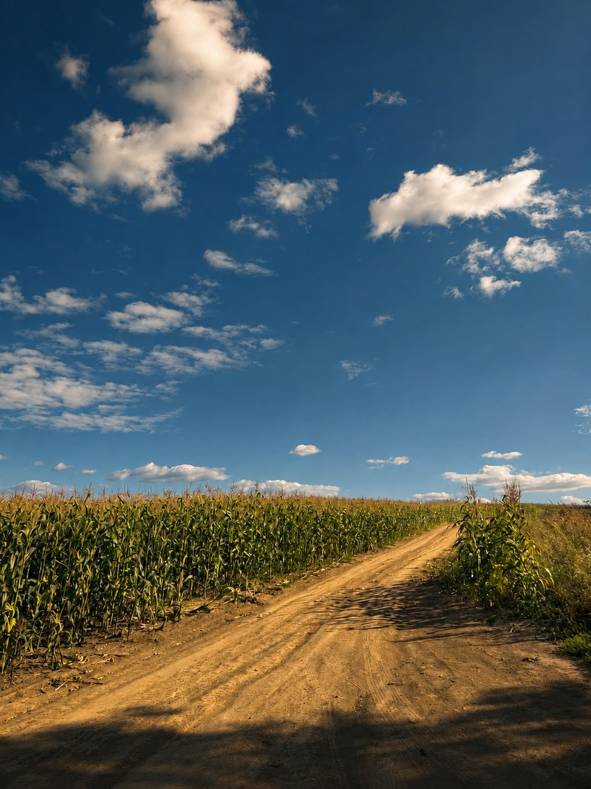
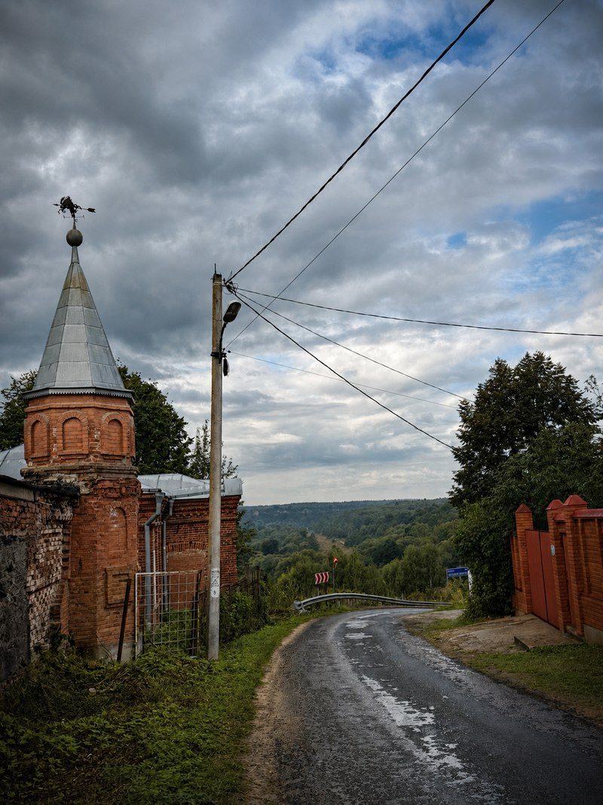
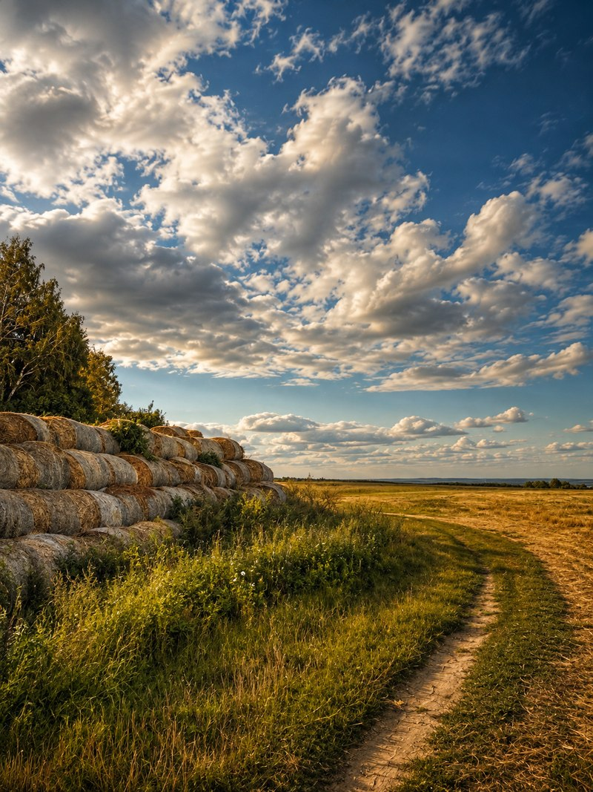
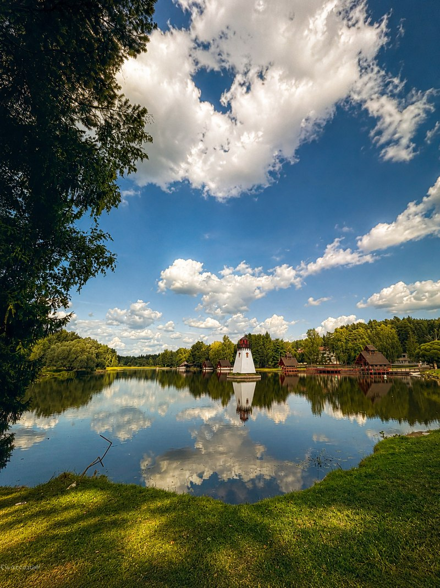
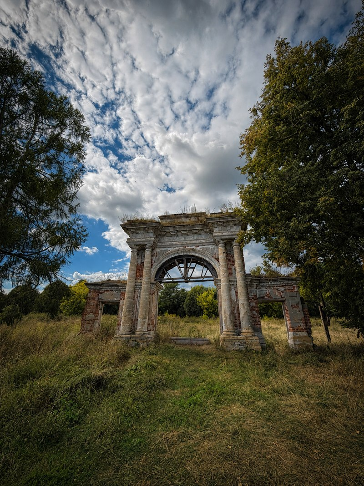
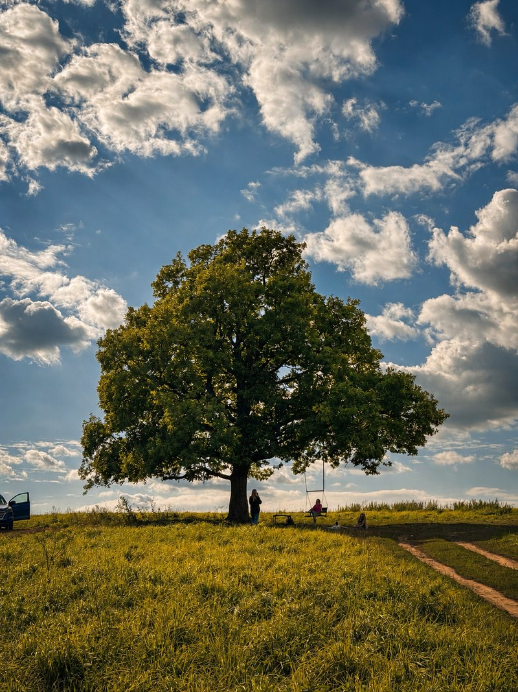
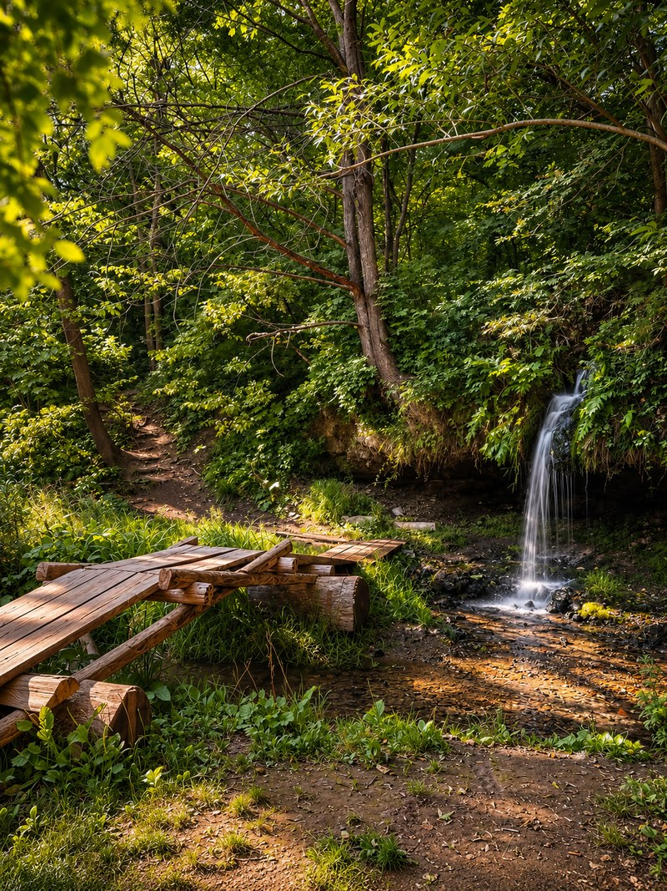
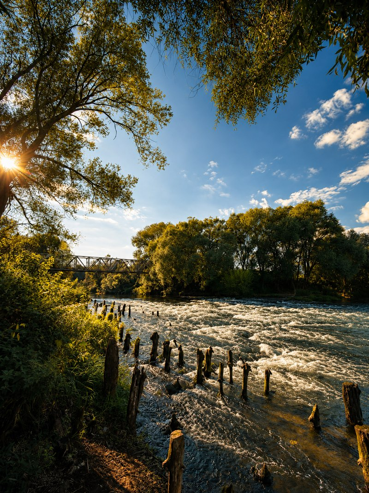
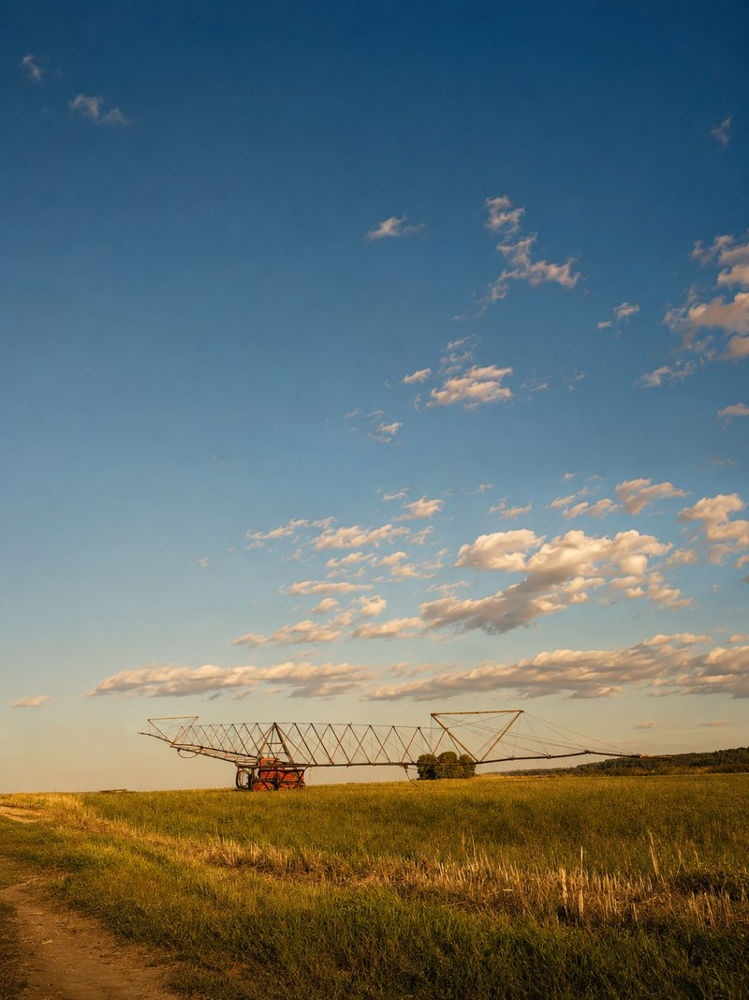

Поля (и один подъём)
От платформы Шарапова Охота дорога сразу уводит в поля: тихий асфальт, убранные к концу августа хлеба, простор и длинные тени от одиноких дубов на холмах. Машин практически нет — только попутный ветер и быстрые просёлки, ведущие к реке Наре.
Расслабляться, впрочем, рано: у Нары маршрут взбирается на крутую Иванову гору у деревни Глубоково. Над долиной царит грандиозная надвратная колокольня 1895 года в неовизантийском стиле — монументальное творение фабриканта Диомида Хутарёва высотой почти 80 метров (сейчас она реставрируется в строительных лесах). Рядом действует храм Рождества Иоанна Предтечи со статусом Патриаршего подворья, устроенный в историческом корпусе богадельни. Изначальный каменный собор XVIII века был снесён в 1930-е годы, а в уцелевших зданиях позже размещались школа-интернат и больница. С горы открывается широкий обзор речной поймы, но сразу за ней ждёт крутой спуск к Наре: брод внизу каменистый и глубокий, на велосипеде непроезжий, поэтому трек огибает его в объезд, честно добавляя высоты в копилку дня.


Бетонка и «Таруса»
В районе деревни Станки, где в 1941 году проходил рубеж обороны Серпухова, асфальт пересекает А-108 — знаменитую бетонку Большого московского кольца. Сразу за насыпью старой лесовозной узкоколейки маршрут сворачивает на неприметную лесную дорожку в государственный природный заказник «Таруса». Асфальт здесь идеален и ухожен, кататься на велосипеде не запрещено, а автомобильного движения нет вовсе: кругом только мачтовые сосны, стук дятлов и идеальный накат. Контрастная расплата встречает на южной границе заказника: заросшее полевое разнотравье, а следом — техничный полупроезд-полупроход по кромке противопожарного рва вдоль опушки.

Озеро с маяком и заслуженный пит-стоп
На выезде из соснового массива, уже у самой границы Калужской области, лесная дорожка неожиданно приводит к озеру с декоративным красно-белым маяком на берегу. Это ухоженная закрытая территория детской базы отдыха, но вид с берега абсолютно открыточный: полосатая макушка башни эффектно отражается в тихой воде среди вековых сосен.
Буквально через пару километров маршрут въезжает в сами Кремёнки — уютный, благоустроенный и живой город на границе областей. Здесь, вдали от шумных мегаполисов, райдеров ждёт заслуженная награда за пройденные лесные километры: по-настоящему сочная, горячая и вкусная местная шаурма. Это идеальная точка для сытного обеда и пополнения запасов изотоника перед броском на правый берег Протвы.

Усадьба Троицкое
Переправившись через Протву, дорога приводит к высокому берегу села Троицкое. В 1790-е годы здешнее имение отстраивала княгиня Екатерина Романовна Дашкова — директор Петербургской академии наук и ярчайшая фигура екатерининской эпохи: господский «дом над погребами», симметричные флигели, домашний театр, оранжереи и собственный кирпичный завод. Главный дом был разобран в середине XX века, но монументальные каменные триумфальные ворота, руины театра и Троицкая церковь сохранились и охраняются государством как памятник федерального значения.
С усадьбой неразрывно связана её подземная история: спелестологи подробно обследовали здесь рукотворные каменно-кирпичные галереи. Никакой мистики — это передовая усадебная и фабричная инженерия XIX века: каналы воздушного отопления со специальными заслонками-шиберами, водопроводные коллекторы и транспортные штольни со следами рельсовых путей. Один из таких ходов выходит прямо к крутому речному обрыву Протвы — именно он когда-то породил стойкую легенду о «тайном тоннеле под руслом реки». Указателей сюда нет: вход притаился на крутом береговом склоне среди вековых зарослей и, увы, неприглядных стихийных свалок мусора. Особо смелые на свой страх и риск всё же могут попытаться отыскать этот лаз и заглянуть в сохранившийся тоннель в человеческий рост, однако забывать о мощном фонаре и коварстве осыпающихся столетних сводов точно не стоит.

Водопады
От усадьбы трек забирает круто вверх по калужским холмам правобережья — это самый затяжной и крутой тягун на всём 112-километровом треке, выводящий на высшую точку маршрута (246 м). На вершине холма раскинул ветви могучий вековой дуб: идеальное место, чтобы перевести дух, насладиться видами речной долины и свернуть на лесную тропинку к каскадным водопадам.
Здесь лесные ручьи пробили глубокие овраги и срываются с известняковых плит звонкими ступенями. Место сохранило первозданный дух: прохладная тень полога леса, замшелые камни, сырой свежий воздух и аккуратные деревянные мостки над бурлящими струями.


Трейлы вдоль Протвы
После водопадов начинается, пожалуй, лучший грунтовый отрезок всего велоатласа: несколько километров лесных синглтреков вдоль самой Протвы. Тропа то плавно огибает овраги, то вылетает на открытые солнечные обрывы над речной излучиной. По пути встречаются замшелые остатки старой водяной мельницы и подвесной пешеходный мост через реку: скрип досок под колёсами, вид на быстрые речные перекаты и сильный соблазн искупаться в прозрачной воде перед броском к Оке.

Карьер и Гавайи
За Протвой маршрут ложится на восток, возвращаясь в Подмосковье. Впереди — Калиновский (Калиново-Дракинский) карьер: чистый песчаный водоём у деревни Дракино с прозрачной бирюзовой водой. Дальше начинаются ровные, как стрела, гравийные дороги сквозь бескрайние просторы полей бывшего ордена Ленина совхоза «Большевик»: после рельефных калужских холмов здесь можно просто включить крейсерскую передачу и лететь вперёд навстречу закату.
А на подступах к городу, на новом песчаном пляже «Серпуховские Гавайи» у слияния Нары и Оки, ждёт открыточный вид: прямо на песчаной отмели посреди речной глади выложена гигантская надпись «Серпухов» — отличная точка для памятного группового фото.

Домой мимо двух монастырей
Заключительные километры трек идёт вдоль благоустроенной набережной реки Нары в Принарском парке. Здесь Серпухов раскрывается во всём величии: на высоком левом берегу возвышаются мощные стены Высоцкого мужского монастыря, а напротив, за рекой — ансамбль женского Владычного монастыря. Маршрут проходит прямо под стенами Высоцкой обители — её стройная классическая жёлтая колокольня со шпилем видна издалека, а у подножия шумит историческая городская плотина на Наре с бурлящим каскадом воды.
От набережной уютные улочки старого купеческого Серпухова с деревянными кружевами наличников и тихими двориками провожают прямо к железнодорожному вокзалу. Город хранит собственную подземную летопись: от крепостного тайника к воде в кремлёвской Никольской башне и неизвестной сводчатой кладки под башней Высоцкого монастыря до тайны исчезнувшей монастырской ризницы и легендарной системы подземных коммуникаций под именем «Замок». Что здесь подтверждено археологией, а что осталось городской легендой — подробно изложено в приложенном расследовании. А для нас день завершается стуком колёс вечерней электрички — 112 километров и три реки остались за спиной.